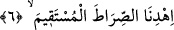

Ey temiz yüzlü kimse, mü’minin ateşinden,
Cehennem ateşi zayıflar ve sönmeye yüz tutar.
Bu yüzden cehennem, ey muhterem çabuk geç der,
Eğer üzerimden çabuk geçmezsen nûrundan ateşim söner.
6. “Bizi doğru yola ilet.” Burada biraz önce istenen yardımın mâhiyeti
açıklanmaktadır. Sanki Allah Teâlâ kullarına: “Sizlere nasıl yardımcı olayım” diye
soruyor, onlar da: “Bizi doğru yola ilet” diyorlar. İbâdet tamamlandıktan sonra sonunu
duâ ile bağlamak şer’î bir kaidedir.
Tefsîr’de şöyle gelir: “Ancak sana kulluk ederiz.” cümlesi tevhîdi ortaya
koymaktadır. “Ancak senden yardım dileriz.” cümlesi ise tevhîd konusunda yardım
talebidir. “Bizi doğru yola ilet!” sözü, din üzre sâbit-kadem olmak içindir. O da ibâdeti
ve yardım talebini gerçek anlamda îfâ ile olur. Çünkü hidâyet üzre sâbit-kadem olmak,
ihtiyaçların en önemlisidir. Nebîlerin ve velîlerin Allah’dan en önemli dileği hep odur.
Yûsuf (a.s.) “Beni müslüman olarak öldür” dediği gibi, Fir’avn’ın sihirbazları da
“Bizi müslüman olarak öldür.” demişlerdi. Sahâbîler de “Bizi ebrâr (iyiler) ile
birlikte öldür” diye duâ etmişlerdir. Zira insan, işin dış görünüşüne aldanmamalıdır.
Çünkü sonunda o hal değişebilir. Nitekim İblîs’e de, Bel’am bin Bâurâ’ya ve
Bersîsâ’ya da böyle olmuştur.
Mevlânâ Celâleddîn (k.s.) der ki:
Cihanda İblîs ve Bel’am gibi yüzbin
Mel’ûn gizli ve âşikâr zâhir olmuştur.
Lâkin Cenâb-ı Hakk dünyâda ikisini meşhûr etti.
Ki bu ikisi diğer mel’ûnlara şâhid olsunlar,
Diğer mel’ûnlar bunların hâlinden ibret alsınlar.
Kâdî Beyzâvî Tefsîr’inde der ki: Böyle bir sözü, vuslata ermiş ârif kişi söylediğinde;
“Beni Sana giden yola erdir ki, bu sûretle hâllerimizin riyâ karanlığı yok olsun.
Bedenlerimizin zulmet perdesi açılsın ve nûr-i kudsünle aydınlanıp seni senin nûrunla
görelim”, anlamını kasdeder.
Molla Fenârî der ki: Bunun asıl anlamı şudur: Allah’a giden yollar sonsuzdur.
Nitekim Kutbü’l-muhakkıkîn: “Hakk’ın bilgisi ve takdîri sınırsızdır. Bilgi ve takdîr
devam ettikçe kulun şevki de sükûnet bulup, zâil olmaz.” demiştir.
Sırat-ı müstakîm, “İslâm milleti ve hakk din” demektir. Burada asıl maksada götüren
vesîle, maksada benzetilmiştir. Çünkü din maksada götüren, Hak ise asıl maksad
olduğundan dine sırat-ı müstakîm denmiştir. Allah Teâlâ, her ne kadar mekândan